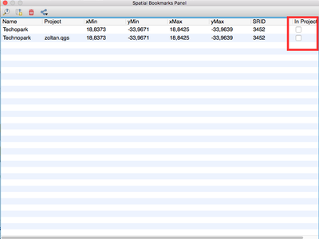
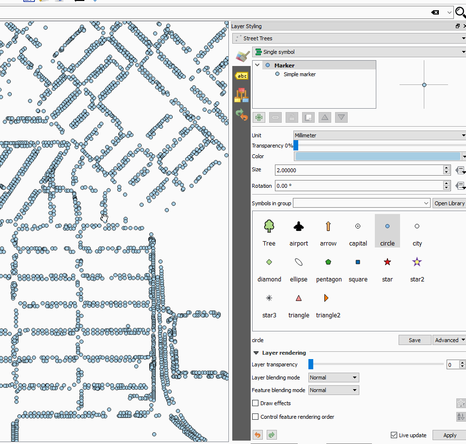
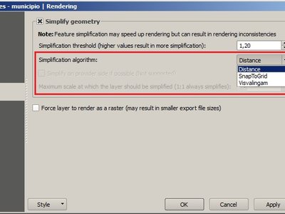
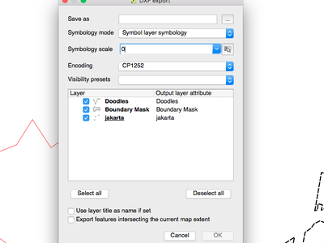
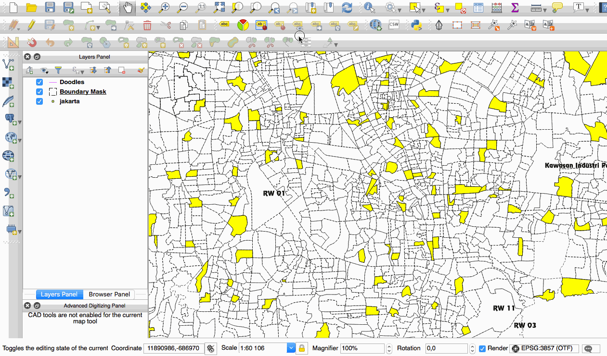
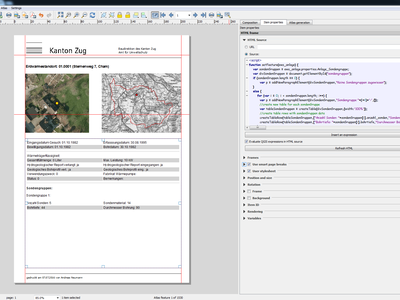
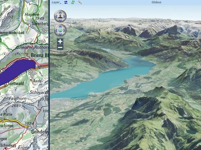

Log met wijzigingen voor QGIS 2.16¶

Dit is het log met wijzigingen voor de volgende uitgave van QGIS - versie 2.16.0 ‘Nødebo’. Het Department of Geoscience and Natural Resource Management Forest and Landscape College in Nødebo was de gastheer voor de Eerste Internationale QGIS-conferentie en ontwikkelaarsbijeenkomst in mei 2015.
Dit is geen Long Term Release (Lange Termijn Release)
Deze uitgave is niet bestemd als een Long Term Release (LTR). gebruikers die een versie van QGIS willen die niet wijzigt en voor tenminste 1 jaar geen oplossingen voor problemen willen, worden geadviseerd de huidige LTR-uitgave 2.14 te gebruiken (die nu, bij de uitgave van QGIS 2.16, onze officiële LTR wordt).
Nieuwe mogelijkheden in QGIS 2.16 ‘Nødebo’
Als u upgradet vanaf QGIS 2.14 zult u vele nieuwe mogelijkheden aantreffen in deze uitgave. We bevelen u aan om de logs voor de wijzigingen van de vorige uitgaven te lezen omdat deze QGIS 2.16 ook alle mogelijkheden bevat die zijn gepubliceerd voor die uitgaven.
Wanneer aan software nieuwe mogelijkheden worden toegevoegd introduceren die de mogelijkheid tot het ontstaan van nieuwe problemen - als u in deze uitgave nieuwe problemen tegenkomt, vul dan een ticket in op de QGIS Bug Tracker.

Uitspreken van Nødebo…
Dankwoord
We would like to thank the developers, documenters, testers and all the many folks out there who volunteer their time and effort (or fund people to do so). From the QGIS community we hope you enjoy this release! If you wish to donate time, money or otherwise get involved in making QGIS more awesome, please wander along to qgis.org and lend a hand!
QGIS is supported by donors and sponsors. A current list of donors who have made financial contributions large and small to the project can be seen on our donors list. If you would like to become an official project sponsor, please visit our sponsorship page for details. Sponsoring QGIS helps us to fund our six monthly developer meetings, maintain project infrastructure and fund bug fixing efforts. A complete list of current sponsors is provided below - our very great thank you to all of our sponsors!
QGIS is gratis software en u bent niet verplicht om maar iets te betalen voor het gebruiken ervan - in feite willen we mensen, wijd en zijd verspreid, aanmoedigen om het te gebruiken ongeacht uw financiële of sociale status - wij geloven dat het uitrusten van mensen met gereedschappen voor het maken van ruimtelijke beslissingen zal resulteren in een betere wereld voor de gehele mensheid. Als u in staat bent QGIS te ondersteunen, kunt u 
- Sponsoren voor QGIS versie 2.16.0
- Algemeen
- Mogelijkheid: Objecten kopiëren in indeling GeoJSON
- Mogelijkheid: Ruimtelijke bladwijzers in projectbestanden opslaan
- Mogelijkheid: Ondersteuning voor berichten van GNSS GNRMC
- Mogelijkheid: Objecten van GeoJSON direct in QGIS plakken
- Mogelijkheid: Verbeteringen voor kaarttips
- Mogelijkheid: Desktop MIME-pictogrammen voor bestandstypen van QGIS
- Gebruikers-interface
- Mogelijkheid: Vergrootglas kaartvenster
- Mogelijkheid: Verbeteringen aan zoomen op de kaart
- Mogelijkheid: Bewerker voor interactieve kleurverlopen opnieuw ontworpen
- Mogelijkheid: Keuze voor de standaardweergave voor het dialoogvenster Attributen
- Mogelijkheid: Verbeteringen aan pop-ups van de kalender
- Mogelijkheid: Verbeterde kleurenkiezers
- Mogelijkheid: Celinhoud uit attributentabel kopiëren
- Mogelijkheid: Verbeterde ondersteuning voor HiDPI
- Mogelijkheid: Verbeterd gedrag van het gereedschap Selecteren op de kaart
- Bijwerkingen van documentatie
- Symbologie
- Mogelijkheid: Symboollaag Pijlen
- Mogelijkheid: Nieuw type symboollaag “gevulde markering”
- Mogelijkheid: Nieuwe toegankelijkheid en symbolen voor verminderd zicht
- Mogelijkheid: Nieuwe symbolen voor eenvoudige markering
- Mogelijkheid: Renderer “Geen symbool”
- Mogelijkheid: Meer controle over het renderen van vullingen van zwaartepunten
- Mogelijkheid: Instelling voor symbool van omtrek van markeringen van lettertype
- Mogelijkheid: Stijl voor join van omtrek beheren voor eenvoudige, ellips en lettertypemarkeringen
- Mogelijkheid: Nieuw kaartgereedschap voor interactief instellen van verschuiving voor puntsymbool
- Mogelijkheid: Dock voor stijlen
- Labels
- Diagrammen
- Renderen
- Digitaliseren
- Gegevensbeheer
- Mogelijkheid: Nieuwe opties voor configureren van de attributentabel
- Mogelijkheid: Meerdere kolommen in formulieren voor attributen
- Mogelijkheid: Beheren van te exporteren attributen bij het opslaan van een vectorlaag
- Mogelijkheid: Weergave formulieren: zijkolom nu te sorteren
- Mogelijkheid: Widget voor verwijzing naar relatie: sneltoets voor toevoegen van nieuwe waarden
- Mogelijkheid: Verbeteringen voor DXF exporteren
- Mogelijkheid: Widgets op bovenste niveau in ontwerper Slepen en neerzetten
- Mogelijkheid: Op formulier gebaseerd selecteren en filteren
- Mogelijkheid: Lagen voor GeoPackage maken
- Mogelijkheid: Beperkingen in widgets
- Mogelijkheid: Attributen van meerdere objecten tegelijkertijd bewerken
- Legenda van laag
- Printvormgeving
- Mogelijkheid: Nieuwe gereedschappen voor het tekenen van polygonen en polylijnen
- Mogelijkheid: Relatieve links in labels van Printvormgeving
- Mogelijkheid: Ingebedde objecten voor atlas in HTML-bron in Printvormgeving als GeoJSON
- Mogelijkheid: Ondersteuning van SVG met parameters voor SVG-afbeeldingen in Printvormgeving
- Mogelijkheid: Eenvoudiger gebruik van HTML in labels
- Mogelijkheid: Uitvoer van geoverwijzingen (bijv PDF) vanuit Printvormgeving
- Mogelijkheid: kaarten van Printvormgeving worden nu automatisch bijgewerkt met voorkeuzen
- Analyse-gereedschappen
- Mogelijkheid: Benoemde parameters in expressies
- Mogelijkheid: Meer eenheden voor afstanden
- Mogelijkheid: Wijzigingen aan expressies
- Mogelijkheid: Statistieken voor tekst- en datumvelden
- Mogelijkheid: Straal van boogpunt weergeven in gereedschap Info
- Mogelijkheid: Doorlopende ondersteuning voor expressies
- Mogelijkheid: Plug-in fTools is vervangen door algoritmen voor Processing
- Processing
- Mogelijkheid: Puntlocaties instellem met een klik op de kaart
- Mogelijkheid: Ondersteuning voor expressies en variabelen
- Mogelijkheid: Vooraf geconfigureerde algoritmen
- Mogelijkheid: Een plug-in maken met op scripts gebaseerde algoritmen uit de Toolbox
- Mogelijkheid: Authenticatiebeheer gebruiken in PostGIS gerelateerde algoritmen
- Mogelijkheid: Ondersteuning voor het scrhijven van tabellen zonder geometrie
- Mogelijkheid: Aanvullende algoritmen voor GRASS in Processing
- Gegevensproviders
- Mogelijkheid: Gegevenssets van OGR worden standaard geopend in modus Alleen-lezen
- Mogelijkheid: Verbeterde afhandeling van Postgres velden type DOMAIN
- Mogelijkheid: Maak modus readOnly van vectorlagen te configureren in project
- Mogelijkheid: Ondersteuning voor databases DB2
- Mogelijkheid: Postgres gematerialiseerde weergaven vernieuwen in DB manager
- Mogelijkheid: Attribuut OGR FID weergeven
- Mo0gelijkheid: services voor ArcGIS Map en Feature REST
- Mogelijkheid: Stijlen opslaan in databases van MS SQL en Oracle
- Mogelijkheid: Velden hernoemen in lagen
- Mogelijkheid: Basisondersteuning voor Oracle Workspace Manager
- Mogelijkheid: Enorme verbeteringen aan WFS Provider
- Mogelijkheid: Genereren van standaard waarden in lagen van Postgres “net op tijd”
- QGIS Server
- Plug-ins
- Programmeerbaarheid
- Belangrijke reparaties
Sponsoren voor QGIS versie 2.16.0¶
Elk jaar ontvangen wij ook ondersteuning van verschillende organisaties die het werk wat wij doen waarderen en die het mogelijk willen maken dat de ontwikkeling van het QGIS project vooral blijft doorgaan. Deze sponsoren, genoemd in onderstaande lijst, zijn wij zeer dankbaar!
  QGIS Usergroup Switzerland, Zwitserland (06.2016-06.2017) QGIS Usergroup Switzerland, Zwitserland (06.2016-06.2017) |
  Staat Vorarlberg, Oostenrijk (11.2011-06.2017) Staat Vorarlberg, Oostenrijk (11.2011-06.2017) |
 Office of Public Works, Ireland, Ierland (12.2014-12.2015) Office of Public Works, Ireland, Ierland (12.2014-12.2015) |
 GAIA. mbH, Duitsland (06.2013-11.2016) GAIA. mbH, Duitsland (06.2013-11.2016) |
| Sourcepole AG, Zwitserland (10.2014-10.2016) |
www.terrelogiche.com, Italië (06.2015-06.2017) |
QGIS-PT (Portugese QGIS gebruikersgroep), Portugal (06.2016-06.2017) |
|
NCC, Zweden (05.2016-05.2017) |
SOLTIG (Soluciones en Tecnologías de Información Geográfica), Costa Rica (06.2016-06.2017) |
Gaia3D, Inc., Zuid-Korea (05.2015-05.2017) |
GEPOL, Polen (04.2016-04.2017) |
Royal Borough of Windsor and Maidenhead, VK (04.2015-04.2017) |
GFI - Gesellschaft für Informationstechnologie mbH, Duitsland (04.2015-04.2017) |
Teaching Jobs with Footprints, Canada (04.2016-04-2017) |
FORNAT AG, Zwitserland (04.2014-04.2017) |
National Parks UK, Verenigd Koninkrijk (03.2016-03-2017) |
KBB Underground Technologies, Duitsland (03.2014-03.2017) |
BGEO OPEN GIS, SL, Spanje (03.2016-03-2017) |
Ager Technology, Spanje (03.2014-03.2017) |
Asociación Geoinnova, Spanje (03.2016-03-2017) |
Gis3W, Italië (01.2014-01.2017) |
GIS-Support, Polen (02.2015-03-2017) |
www.molitec.it, Italië (01.2014-03.2017) |
|
Chartwell Consultants Ltd., Canada (03.2015-03.2017) |
Trage Wegen vzw, België (03.2015-03.2017) |
GKG Kassel (Dr.-Ing. Claas Leiner), Duitsland (03.2014-03.2017) |
CawdorForestry Resource Management, Schotland (02.2016-02.2017) |
ChameleonJohn, USA (02.2016-02.2017) |
2D3D.GIS, Frankrijk (12.2015-12.2016) |
Dr. Kerth + Lampe Geo-Infometric GmbH, Duitsland (12.2015-12.2016) |
MappingGIS, Spanje (11.2015-11.2016) |
|
HostingFacts.com, Estland (12.2015-12.2016) |
Urbsol, Australië (11.2014-11.2016) |
Lutra Consulting, VK (10.2015-10.2016) |
WhereGroup GmbH & Co. KG, Duitsland (08.2015-08.2016) |
Nicholas Pearson Associates, VK (07.2015-07.2016) |
QGIS Polska, Polen (07.2015-07.2016) |


{kind=link}
{kind=link}
{kind=link}
{kind=link}
{kind=link}
{kind=link}
Algemeen¶
Mogelijkheid: Objecten kopiëren in indeling GeoJSON¶
De eerdere instelling om WKT op t enemen bij het kopiëren van objecten is vervangen door een keuze voor het kopiëren vanobjecten als “Platte tekst, alleen attributen”, “Platte tekst, geometrie WKT” en een nieuwe optie “GeoJSON”. Indien ingesteld op “GeoJSON”, zal het kopiëren van objecten in QGIS een GeoJSON tekstweergave van de objecten op het klembord plaatsen om ze eenvoudig in andere toepassingen/JavaScript-code te kunnen plakken. Deze instellingen zijn te vinden onder Extra -> Opties -> Databronnen -> Objecten kopiëren als.

Deze mogelijkheid werd ontwikkeld door: Nyall Dawson (North Road)
Mogelijkheid: Ruimtelijke bladwijzers in projectbestanden opslaan¶
Wanneer u een ruimtelijke bladwijzer maakt, kunt u er nu voor kiezen om de bladwijzer op te slaan in uw actieve projectbestand. Scroll door het paneel met bladwijzers om het keuzevak te zoeken om deze mogelijkheid in te schakelen.

Deze mogelijkheid werd ontwikkeld door Stéphane Brunner
Mogelijkheid: Ondersteuning voor berichten van GNSS GNRMC¶
QGIS kan nu GLONASS satellietgegevens ($GN* regels) afhandelen om een meer precieze positie te verkrijgen uit externe GPS/GNSS-ontvangers.

Deze mogelijkheid werd ontwikkeld door Ondřej Fibich
Mogelijkheid: Objecten van GeoJSON direct in QGIS plakken¶
De afhandeling van het klembord van QGIS kan nu vele aanvullende tekstindelingen parsen, inclusief eigen ondersteuning voor collecties van objecten van GeoJSON. Dit stelt u in staat om direct teksttekenreeksen van GeoJSON in QGIS te plakken en ze automatisch te hebben geconverteerd naar objecten en geometriën voor QGIS.

Deze mogelijkheid werd ontwikkeld door: Nyall Dawson (North Road)
Mogelijkheid: Verbeteringen voor kaarttips¶
- De zichtbaarheid voor kaarttips wordt nu bewaard tussen sessies
- Kaarttips kunnen nu HTML-inhoud weergeven, inclusief afbeeldingen, video’s en URL-koppelingen

Dit werd mogelijk gemaakt door OPENGIS.ch GmbH
Deze mogelijkheid werd ontwikkeld door Marco Bernasocchi (OpenGIS.ch)
Mogelijkheid: Desktop MIME-pictogrammen voor bestandstypen van QGIS¶
het is nu eenvoudiger om bestandstypen van QGIS te herkennen en er onderscheid tussen te maken in het bestandsbeheer van uw besturingssysteem. er zijn nu desktop MIME-pictogrammen voor de volgende bestandstypen:
- *.qgs - QGIS projectbestand
- *.qml - Bestand met instellingen voor laag
- *.qlr - Bestand met definities voor laag
- *.qpt - Sjabloonbestand voor printvormgeving
Deze mogelijkheid werd ontwikkeld door Alexandre Neto
Gebruikers-interface¶
Mogelijkheid: Vergrootglas kaartvenster¶
Een gereedschap Vergrootglas is toegevoegd aan QGIS, wat het u mogelijk maakt de kaart weer te geven in ene bepaalde schaal. Dit stelt u in staat in te zoomen op ene kaart, zonder de schaal van de kaart te wijzigen, wat het eenvoudiger maakt om nauwkeuriger de posities van labels en symbolen aan te passen. Aanvullend kan in de instellingen ene standaard vergrotingsfactor worden gedefinieerd, wat erg nuttig is voor schermen met hoge resoluties!

Dit werd mogelijk gemaakt door the QWAT project
Deze mogelijkheid werd ontwikkeld door Paul Blottiere (Oslandia)
Mogelijkheid: Verbeteringen aan zoomen op de kaart¶
QGIS 2.16 brengt verbeteringen voor de manier waarop u in en uit kunt zoomen op het kaartvenster.
- Ingedrukt houden van de toets :kbd:`Ctrl`bij het gebruiken van het muiswiel om in- of uit te zoomen resulteert in een fijnere zoom. Dit gedrag brengt het kaartvenster in lijn met de printvormgeving.
- Indrukken van
Ctrl++ofCtrl+-- voert onmiddellijk in-/uitzoomen uit op het kaartvenster - Indien bepaalde kaartgereedschappen actief zijn, kunt u een webkaartachtige zoom uitvoeren door
Shiftingedrukt te houden en een rechthoek te tekenen op de kaart om naar dat gebied te zoomen. Dit is ingeschakeld voor de kaartgereedschappen die geen gereedschappen voor selecteren zijn (omdat die Shift gebruiken voor het toevoegen aan de selectie), en gereedschappen voor bewerken.

Deze mogelijkheid werd ontwikkeld door: Nyall Dawson (North Road)
Mogelijkheid: Bewerker voor interactieve kleurverlopen opnieuw ontworpen¶
De bewerker voor kleurenbalken is opnieuw bewerkt met interactieve besturingselementen voor het eenvoudiger manipuleren van kleurverlopen. Het dialoogvenster heeft nu ook een interactieve plot voor het aanpassen van stops voor het kleurverloop via de waarden van de kleuren HSV of RGB. De nieuwe mogelijkheden van de bewerker:
- slepen om stops voor kleuren te verplaatsen
- dubbelklikken om een nieuwe stop toe te voegen
- drukken op Delete zal de geselecteerde stop wissen
- drukken op pijltjestoetsen zal de geselecteerde stop verplaatsen, en ingedrukt houden van Shift tijdens het drukken op een pijltjestoets resulteert in ene grotere verplaatsing
- slepen en neerzetten van een kleur op de widget om een nieuwe stop toe te voegen

Deze mogelijkheid werd ontwikkeld door: Nyall Dawson (North Road)
Mogelijkheid: Keuze voor de standaardweergave voor het dialoogvenster Attributen¶
In eerdere versies van QGIS zou het dialoogvenster Attributen altijd worden geopend in de tabelweergave. Nu heeft u de keuze om standaard altijd het dialoogvenster te openen in ofwel de tabelweergave, de formulierweergave of om de laatst gebruikte weergave te onthouden.

Deze mogelijkheid werd ontwikkeld door: Nyall Dawson (North Road)
Mogelijkheid: Verbeteringen aan pop-ups van de kalender¶
De datum van vandaag wordt nu geaccentueerd in pop-upwidgets van de kalender, wat het eenvoudiger maakt een datum te selecteren, relatief aan de huidige dag.

Deze mogelijkheid werd ontwikkeld door: Nyall Dawson (North Road)
Mogelijkheid: Verbeterde kleurenkiezers¶
De keuzemenu’s voor knoppen van kleuren geven nu een kleurenwiel weer, wat het mogelijk maakt snelle aanpassingen te maken aan kleuren.

Deze mogelijkheid werd ontwikkeld door Nathan Woodrow
Mogelijkheid: Celinhoud uit attributentabel kopiëren¶
Een nieuw item voor het contextmenu, genaamd Celinhoud kopiëren is nu beschikbaar in het menu dat wordt geopend met een klik met rechts in een cel in de attributentabel. De inhoud van de cel wordt gekopieerd naar het klembord als op deze knop wordt geklikt, ongeacht het soort widget.

Deze mogelijkheid werd ontwikkeld door Paul Blottiere (Oslandia)
Mogelijkheid: Verbeterde ondersteuning voor HiDPI¶
Gebruikers van HiDPI-schermen zullen merken dat er een verbeterde gebruikersinterface is omdat er werk is gemaakt van het opwaarderen van pictogrammen om te kunnen vertrouwen op afbeeldingen van SVG. Vanaf QGIS 2.16 zijn alle werkbalken nu compatibel met HiDPI.
Deze mogelijkheid werd ontwikkeld door Mathieu Pellerin
Mogelijkheid: Verbeterd gedrag van het gereedschap Selecteren op de kaart¶
Het gedrag van op de kaart gebaseerde gereedschappen om te selecteren is verfijnd, met de volgende wijzigingen:
Voor selecties van klikken-en-slepen:
Shiftingedrukt houden = aan selectie toevoegenCtrlingedrukt houden = uit selectie verwijderenCtrl+Shiftingedrukt houden = met huidige selectie kruisenAltingedrukt houden (kan ook worden gebruikt metShift/Ctrl) = wijzigt de modus van selectie van “kruist met” tot “bevat volledig”
Voor selecties met één enkele klik:
ShiftofCtrlingedrukt houden = schakelen of het object is geselecteerd (d.i. ofwel aan de huidige selectie toevoegen of uit de huidige selectie verwijderen)
Deze wijziging brengt het gedrag van het kaartvenster in lijn met andere toepassingen voor ontwerpen en ook met het gedrag van printvormgeving.

Deze mogelijkheid werd ontwikkeld door: Nyall Dawson (North Road)
Bijwerkingen van documentatie¶
Mogelijkheid: Documentatie voor QGIS 2.14¶
Er is nu een automatische manier om een ticket te maken in de opslagplaats voor de documentatie voor elke nieuwe mogelijkheid in QGIS. We zijn er zeker van dat alle nieuwe mogelijkheden nu zijn opgenomen in de documentatie.
Het team voor de documentatie heeft hard gewerkt aan drie uitgaven van QGIS: 2.10, 2.12 en 2.14, dus nu is de documentatie up to date voor de huidige Long Term Release van QGIS. Dat zijn ongeveer 180 nieuwe mogelijkheden die zijn beschreven in de 4 maanden.
Als u denkt dat er nog enkele mogelijkheden ontbreken in de documentatie, mak dan een nieuw ticket aan, schrijf een korte tekst om het t ebeschrijven of, beter nog, dien een bijdrage in.
Het team voor de documentatie heeft ook gewerkt aan het verbeteren van de richtlijnen voor de documentatie om het proces van bijdragen voor nieuw schrijvers van documentatie en vertalers voor de help eenvoudiger te maken.
Het team voor de documentatie zal de volgende maanden hard ana het werk gaan om de huidige stabiele uitgave (2.16) van QGIS te documenteren.

Bekijk de milestones 2.10, 2.12 en 2.14 om al het uitgevoerde werk voor de documentatie te bekijken:
Mogelijkheid: Documentatie voor het authenticatiesysteem in de gebruikershandleiding¶
De mogelijheden voor het authenticatiesysteem, dat werd geïntroduceerd in eerdere versies van QGIS (2.12 en 2.14) zijn nu volledig beschreven in de gebruikershandleiding, en zullen een grote bijdrage leveren in het begrijpen van het systeem en het gebruiken ervan.

Deze mogelijkheid werd mogelijk gemaakt door Boundless
Deze mogelijkheid werd ontwikkeld door Larry Shaffer
Symbologie¶
Mogelijkheid: Symboollaag Pijlen¶
De symboollaag “pijl” is een symboollaag die het mogelijk maakt rechte of gebogen pijlen te tekenen uit een lijnlaag.
In de modus Gebogen worden knopen, van de lijnlaag waarop deze symbollaag is gebaseerd, gebruikt als controlepunten voor cirkelbogen. Pijlen kunnen worden gevuld met elke bestaande vulstijl die wordt ondersteund door QGIS. Opties maken het ook mogelijk het type van de pijl te selecteren (met één of twee pijluitienden, gewoon of gehalveer), de breedte ervan (die variabel kan zijn) en de grootte van de pijluiteinden.

Dit werd mogelijk gemaakt door MEEM (French Ministry of Sustainable Development) en Andreas Neumann
Deze mogelijkheid werd ontwikkeld door Hugo Mercier
Mogelijkheid: Nieuw type symboollaag “gevulde markering”¶
Een “gevulde markering” is soortgelijk aan de eenvoudige markerings-symboollaag, met het verschil dat het een subsymbool voor vullen gebruikt om de markering te renderen. Dit maakt het mogelijk alle bestaande QGIS-stijlen voor vullen (en oomtrek) voor het renderen van markeringen te gebruiken, bijv, vullingen kleurverloop of shapeburst.

Deze mogelijkheid werd ontwikkeld door: Nyall Dawson (North Road)
Mogelijkheid: Nieuwe toegankelijkheid en symbolen voor verminderd zicht¶
Aanvullende symbolen voor verminderd zicht en toegankelijkheid zijn nu beschikbaar in de collectie van SVG-symbolen van QGIS.

Deze mogelijkheid werd ontwikkeld door Mathieu Pellerin
Mogelijkheid: Nieuwe symbolen voor eenvoudige markering¶
- halve cirkel, een derde, kwartcirkels
- markeringen halve driehoek
- gevulde kruis en achthoekige markeringen
- markering diamant ellips

Deze mogelijkheid werd ontwikkeld door Mathieu Pellerin
Mogelijkheid: Renderer “Geen symbool”¶
Bij het gebruiken van de nieuwe renderer “Geen symbool” in QGIS 2.16 zal geen symbool worden getekend voor objecten, maar labels, diagrammen en andere delen die gene symbool zijn worden wel weergegeven.
Selecties kunnen nog steeds worden gemaakt in de laag in het kaartvenster en geselecteerde objecten zullen worden gerenderd met een standaard symbool. Objecten die worden bewerkt zullen ook worden weergegeven.
Dit is bedoeld als een handige sneltoets voor lagen waarin u alleen de labels of diagrammen weer wilt geven, en voorkomt dat symbolen moeten worden gerenderd met volledig transparante vulling/rand om dit te bereiken. Het zou, gelet op de titel, niet erg nuttig kunnen lijken - maar in feite is het een zeer handige sneltoets!

Deze mogelijkheid werd ontwikkeld door: Nyall Dawson (North Road)
Mogelijkheid: Meer controle over het renderen van vullingen van zwaartepunten¶
Een optie is toegevoegd om te beheren of de markering moet worden getekend op alle delen of slechts één enkel deel van meerdelige objecten.

Deze mogelijkheid werd ontwikkeld door Mathieu Pellerin
Mogelijkheid: Instelling voor symbool van omtrek van markeringen van lettertype¶
Het symbool van markeringen van lettertypen mag nu een omtrek hebben, die de zichtbaarheid van dergelijke symbolen kan verbeteren door een bufferkleur voor de omtrek toe te voegen. Ingeschakelde tekens van Emoji-lettertypen kunnen dienen als leuke markeringen, indien gebruikt met een dikke omtrek.

Deze mogelijkheid werd ontwikkeld door Mathieu Pellerin
Mogelijkheid: Stijl voor join van omtrek beheren voor eenvoudige, ellips en lettertypemarkeringen¶
Gebruikers kunnen nu de stijl voor join van omtrek wijzigen voor eenvoudige, ellips en lettertypemarkeringen om hun symbologie fijner af te stemmen.

Deze mogelijkheid werd ontwikkeld door Mathieu Pellerin
Mogelijkheid: Nieuw kaartgereedschap voor interactief instellen van verschuiving voor puntsymbool¶
Maakt het mogelijk de verschuiving voor een punt in te stellen als het is gebonden aan een veld dat wordt overschreven door middel van gegevens gedefinieerde instellingen. Het veld voor de verschuiving moet een tekstveld zijn. Het kaartgereedschap om interactief de verschuiving in te stellen staat in de werkbalk Geavanceerd digitaliseren in de groep met pictogrammen met het gereedschap Puntsymbolen roteren. Bekijk de bijgevoegde animatie voor een voorbeeld. Onthoud dat bij het maken van opeenvolgende aanpassingen aan de verschuiving, u zou moeten slepen vanaf de originele puntmarkering, niet de huidige positie van het symbool zoals dat is gerenderd op de kaart.

Deze mogelijkheid werd ontwikkeld door: Nyall Dawson (North Road)
Mogelijkheid: Dock voor stijlen¶
Het dock voor stijlen is een nieuwe, veel efficiëntere manier om laagstijlen in QGIS te beheren. Het ondersteunt een live-voorbeeld van de stijlwijzigingen als zij worden gemaakt, volledige ondersteuning voor ongedaanmaken / opnieuw en een minder afleidende werkstroom als u de cartografie voor uw kaart voorbereid. Bekijk voor een uitgebreid overzicht van de mogelijkheden van het dock voor stijlen, style dock part 1 en style dock part 2.

Deze mogelijkheid werd ontwikkeld door Nathan Woodrow
Labels¶
Mogelijkheid: Kaartgereedschappen voor labels werken nu met op regels gebaseerd labelen¶
In eerdere versies van QGIS waar op regels gebaseerd labelen werd gebruikt, kon u de kaartgereedschappen voor labels niet gebruiken om posities van labels interactief te plaatsen en te roteren. Dit wortd nu ondersteund.

Deze mogelijkheid werd ontwikkeld door Martin Dobias
Diagrammen¶
Mogelijkheid: Legenda-items voor grootte van diagram¶
Een nieuwe tab “Legenda” is toegevoegd aan de eigenschappen voor diagrammen, wat het mogelijk maakt zowel de bestaande legenda voor attributen als de nieuwe legenda voor grootte in-/uit te schakelen. De legenda voor de grootte heeft een te configureren markeringssymbool.

Dit werd mogelijk gemaakt door ADUGA
Deze mogelijkheid werd ontwikkeld door: Nyall Dawson (North Road)
Mogelijkheid: Selecteren van eenheid voor breedte van omtrek¶
Selecteren van de eenheid voor de breedte van de omtrek is nu beschikbaar. Dit maakt het mogelijk, voor een diagram met de grootte van kaarteenheden, dat het zal vergroten en verkleinen gebaseerd op de schaal van de kaart waarbij een vaste breedte van de omtrek in millimeters wordt behouden

Deze mogelijkheid werd ontwikkeld door Mathieu Pellerin
Mogelijkheid: Diagrammen gedragen zich zoals labels en kunnen vanaf de werkbalk worden beheerd¶
Origineel was er een werkbalk voor labels die het mogelijk maakte om:
- opties voor labels van de huidige laag in te stellen
- de vastgezette labels te accentueren. Accentueren is groen op een bewerkbare laag, anders blauw.
- labels vast te zetten of los te maken
- labels te verplaatsen, weer te geven en te verbergen
Met deze nieuwe mogelijkheid is een nieuw gereedschap beschikbaar in de werkbalk voor labels dat het mogelijk maakt eigenschappen in te stellen voor diagrammen van de huidige laag. Meer nog, elk hierboven genoemd gereedschap is nu ook volledig te gebruiken voor diagrammen.

Dit werd mogelijk gemaakt door MEEM (French Ministry of Sustainable Development)
Deze mogelijkheid werd ontwikkeld door Paul Blottiere (Oslandia)
Renderen¶
Mogelijkheid: Nieuwe opties voor direct vereenvoudigen¶
De gebruiker kan het algoritme selecteren dat moet worden gebruikt, als de vereenvoudiging aan de lokale zijde wordt uitgevoerd, om sneller geometrieën te tekenen. QGIS verschaft nu drie algoritmen:
- Distance (standaard algoritme, en de enige beschikbare optie in eerdere versies van QGIS)
- Snappen aan raster
- Visvalingam
Deze wijziging verplaatst ook de lokale “directe” vereenvoudiging van de provider en klassen voor iteratie naar de code voor renderen. Dit vermijdt gevallen waarin de vereenvoudiging de opgehaalde geometrie, verkregen van vectorgegevensproviders, wijzigt, wat mogelijk op regel gebaseerde en op andere expressies gebaseerde symbologie beïnvloed. Dit is belangrijk als u expressies heeft die de geometrie van een object gebruiken (bijv. bij berekening van een gebied) - we willen er zeker van zijn dat de berekeningen worden uitgevoerd op de originele geometrie, niet op de vereenvoudigde.

Deze mogelijkheid werd ontwikkeld door Alvaro Huarte
Mogelijkheid: Op kwantielen gebaseerde classificatie voor rasterlagen¶
Deze optie is te vinden in het dialoogvenster voor classificatie modus voor enkelband pseudokleur rasters.

Deze mogelijkheid werd ontwikkeld door Piers Titus van der Torren
Mogelijkheid: Live renderer schaduw voor heuvels¶
QGIS 2.16 heeft een nieuwe renderer voor rasters die dynamisch een model voor schaduw voor heuvels zal maken uit een Digital Elevation Model.

Deze mogelijkheid werd ontwikkeld door Asger Skovbo Petersen en Nathan Woodrow
Digitaliseren¶
Mogelijkheid: “Herhalende” modus Vastzetten voor beperkingen¶
Indien ingeschakeld worden herhaald vastgezette niet automatisch geschoond als een nieuw punt wordt toegevoegd. Zij zijn handig wanneer dezelfde beperking herhaald moet worden voor meerdere punten (bijv. toevoegen van punten die altijd 50 meter van elkaar af liggen). Deze functionaliteit is beschikbaar in het paneel Geavanceerd digitaliseren.

Deze mogelijkheid werd ontwikkeld door: Nyall Dawson (North Road)
Mogelijkheid: Geometrieën Lijnen uitbreiden met gereedschap Objecten vervormen¶
Het gereedschap objecten vervormen stelt u nu in staat om lijnen uit te breiden, door het vervormen te beginnen bij het start- of eindpunt van een lijn.

Deze mogelijkheid werd ontwikkeld door Martin Dobias
Mogelijkheid: Tolerantie voor segmentatie¶
Ondersteuning werd toegevoegd om de tolerantie voor segmentatie in te stellen (maximale hoek of maximale verschil). Deze instelling beheert de manier waarop cirkelbogen worden gerenderd. Hoe kleiner de maximale hoek (in graden) of het maximale verschil (in kaarteenheden), des te meer de rechte lijnsegmenten zullen worden gebruikt bij het renderen. U vindt deze optie in Extra -> Opties -> Rendering -> Segmentatie van boog.

Deze mogelijkheid werd ontwikkeld door Marco Hugentobler
Gegevensbeheer¶
Mogelijkheid: Nieuwe opties voor configureren van de attributentabel¶
- Maakt het mogelijk de kolommen van de attributentabel opnieuw te ordenen (via klik met rechts op de kop van de veldnaam –> dialoogvenster “Kolommen beheren”; slepen en neerzetten om opnieuw te ordenen)
- Maakt het mogelijk een nieuwe kolom toe te voegen aan de attributentabel om knoppen te bevatten voor het activeren van een actie, gebaseerd op het gekozen object
- Kolommen kunnen in de attributentabel worden verborgen (via klik met rechts op de kop van de veldnaam)
- QGIS onthoudt nu de breedte van elke kolom waarvan de grootte is gewijzigd

Dit werd mogelijk gemaakt door Kanton Zug, Zwitserland en MEEM (French Ministry of Sustainable Development)
Deze mogelijkheid werd ontwikkeld door Stéphane Brunner (Camptocamp) en Matthias Kuhn (OPENGIS.ch)
Mogelijkheid: Meerdere kolommen in formulieren voor attributen¶
Bij het gebruiken van de ontwerper Slepen en neerzetten kan een gebruiker specificeren over hoeveel velden de kolommen moeten worden verdeeld.
Inschakelen van meerdere kolommen op de tab “Velden” van de laageigenschappen:
- Zorg er voor dat u de modus voor ontwerpen van formulieren Slepen en neerzetten gebruikt
- Dubbelklik op een groep containers, zoals tabs of groepen
- een klein dialoogvenster zal verschijnen waar u het aantal kolommen kunt selecteren
De volgorde zal zijn eerste kolom, tweede kolom, n-de kolom, volgende rij, etc.

Dit werd mogelijk gemaakt door Kanton Zug, Zwitserland
Deze mogelijkheid werd ontwikkeld door Matthias Kuhn
Mogelijkheid: Beheren van te exporteren attributen bij het opslaan van een vectorlaag¶
Keuzevakken zijn toegevoegd zodat u kunt selecteren welke attributen u wilt opnemen bij het exporteren, en ook heeft u nu de optie om “weergegeven” waarden weg te schrijven in plaats van ruwe waarden. Deze optie is nuttig voor lagen met relaties, waar u liever ene letterlijke waarde zou zien opgenomen dan een numerieke identificatie.
Afhankelijk van de indeling wordt de “weergegeven waarde” standaard ingeschakeld, bijv. bij exporteren naar de indelingen voor werkbladen (ODF, XLSX, CSV/Tekst).

Dit werd gedeeltelijk mogelijk gemaakt door Kanton Zug, Zwitserland
Deze mogelijkheid werd ontwikkeld door Jürgen Fischer, Even Rouault
Mogelijkheid: Weergave formulieren: zijkolom nu te sorteren¶
In de modus Formulieren van de attributentabel van QGIS staat een zijkolom die men kan gebruiken om direct naar een specifiek object te springen. Tot aan deze uitgave was deze zijweergave niet te sorteren. Voor het sorteren moest men naar de modus tabel springen en dan weer terug naar de modus Formulieren. Nu kan men het object direct sorteren met het voorbeeld van de attributen van het object in het zijpaneel, door de sorteerfunctie te kiezen in de keuzeknop voor expressies boven de zijkolom.

Dit werd mogelijk gemaakt door Kanton Zug, Zwitserland
Deze mogelijkheid werd ontwikkeld door Matthias Kuhn (OpenGIS)
Mogelijkheid: Widget voor verwijzing naar relatie: sneltoets voor toevoegen van nieuwe waarden¶
Het widget voor verwijzingen naar relaties werd uitgebreid om de gerelateerde lijsten met waarden sneller te kunnen uitbreiden. Als het keuzevak “Toevoegen van nieuwe objecten toestaan” is ingeschakeld in de eigenschappen voor het widget (toegankelijk via de tab “Velden” in de laageigenschappen), zal rechts naast het widget een groene knop verschijnen. Na het drukken op de knop “Plus”, zal het dialoogvenster van de gerelateerde tabel worden geopend in de modus “nieuw record” waar men een aanvullend item kan toevoegen.

Dit werd mogelijk gemaakt door Kanton Zug, Zwitserland
Deze mogelijkheid werd ontwikkeld door Matthias Kuhn (OpenGIS)
Mogelijkheid: Verbeteringen voor DXF exporteren¶
Ondersteuning is toegevoegd voor op regels gebaseerde labels en geroteerde symbolen, en voor het uitvoeren van 3D-geometrieën.

Deze mogelijkheid werd ontwikkeld door Jürgen Fischer
Mogelijkheid: Widgets op bovenste niveau in ontwerper Slepen en neerzetten¶
Het is nu mogelijk om widgets direct in het formulier te plaatsen met de ontwerper Slepen en neerzetten. Een formulier voor de ontwerper Slepen en neerzetten kan daarom bestaan zonder enige tabs erop.

Deze mogelijkheid werd ontwikkeld door Matthias Kuhn
Mogelijkheid: Op formulier gebaseerd selecteren en filteren¶
In QGIS 2.16 werd een nieuwe modus toegevoegd aan de mogelijkheden voor het zoeken en filteren van objecten in het dialoogvenster van de attributentabel. Indien geactiveerd (met behulp van een knop op de werkbalk of door CTRL+F in te drukken), zal het dialoogvenster schakelen naar de formulierweergave en alle widgets worden vervangen door hun variant voor de wrapper van het zoekwidget.
Naast elk widget staat een gereedschapsknop met opties voor het beheren van het gedrag voor zoeken/filteren voor dat veld, bijv. “is gelijk aan”, “is niet gelijk aan”, “is null”, “groter dan”, etc.., met de weergegeven opties die overeenkomen voor het overenekomend eveld en type widget.
Nieuwe knoppen verschijnen aan de onderzijde van het formulier om ofwel overeenkomende objecten te selecteren (met opties voor het toevoegen aan selectie/verwijderen uit selectie/selecteren binnen huidige selectie) of objecten in de tabel te filteren (met opties voor toevoegen van objecten aan huidige filter of het verder beperken van het huidige filter).
U krijgt ook toegang tot deze modus met de nieuwe optie “Op waarde selecteren”, of door te drukken op F3 met een laag geselecteerd.

Deze mogelijkheid werd mogelijk gemaakt door SIGE, Stad Uster, Morges
Deze mogelijkheid werd ontwikkeld door: Nyall Dawson (North Road)
Mogelijkheid: Lagen voor GeoPackage maken¶
De indeling GeoPackage is een open standaard voor georuimtelijke gegevens die op uw radar zou moeten zijn als vervanging voor de indeling ESRI Shapefile. Het verbetert vele tekortkomingen van de indeling Shapefile inclusief beperkingen in het aantal en de breedte van velden. In QGIS 2.16 is het nu eenvoudig om een nieuwe GeoPackage te maken omdat het is geïntegreerd in de werkbalk Laag en het menu Kaartlagen -> Laag maken.

Deze mogelijkheid werd ontwikkeld door Even Rouault
Mogelijkheid: Beperkingen in widgets¶
In eerdere versies van QGIS was er geen manier om de geldigheid van waarden te controleren die werden ingevoerd door een gebruiker voor attributen van een object. Nu kan een gebruiker een beperking voor elk widget instellen in het formulier van de attributen voor een laag. Beperkingen worden gemaakt met behulp van expressies voor QGIS, bijv. "min_population" > 50000. Een keuzevak “Niet Null” is ook beschikbaar om aan te geven dat voor dat veld een waarde moet worden ingevuld. Aanvullend kan een beschrijvende tekst worden toegevoegd om de gebruiker nuttige terugkoppeling te geven als een beperking mislukt.
Beperkingen worden direct geëvalueerd terwijl een gebruiker het object aanpast. Een helptip is beschikbaar voor elk veld dat een beperking heeft, die de expressie van de beperking weergeeft, het resultaat van de evaluatie en een beschrijving van de beperking. Een berichtenbalk zal ook aan de bovenzijde van het formulier worden weergegeven en velden vermelden die niet voldoen aan de criteria van de beperking.

Dit werd mogelijk gemaakt door het project QWAT en het Kanton Zug, Zwitserland <http://geo.zg.ch/>`__
Deze mogelijkheid werd ontwikkeld door Matthias Kuhn (OPENGIS.ch) and ` Paul Blottiere (Oslandia) <http://oslandia.com/>`__
Mogelijkheid: Attributen van meerdere objecten tegelijkertijd bewerken¶
Deze wijziging maakt het mogelijk attributen van meerdere objecten tegelijkertijd te bewerken. Het wordt ingeschakeld als het dialoogvenster van de attributentabel in de “modus Formulier” staat, via een nieuwe knop “Meervoudige bewerkingen” op de werkbalk. Er is ook een sneltoets om meerdere objecten tegelijkertijd te bewerken door middel van Bewerken -> Attributen van geselecteerde objecten aanpassen.
In deze modus zullen wijzigingen aan de waarden van attributen van toepassing zijn op alle geselecteerde objecten. Nieuwe widgets verschijnen naast elk widget voor bewerking wat het mogelijk maakte de huiidge status voor meervoudig bewerken weer te geven en voor het terugdraaien van wijzigingen op een basis van veld-naar-veld.
Wijzigingen worden gemaakt als één enkele opdracht voor bewerken, dus zal het drukken op Ongedaan maken alle wijzigingen voor alle objecten in één keer terugdraaien.
Modus Meervoudig bewerken is alleen beschikbaar voor automatisch gegenereerde en formulier van Slepen en neerzetten - het wordt niet ondersteund in aangepaste formulieren voor de UI.

Dit werd mogelijk gemaakt door Kanton Basel Stadt
Deze mogelijkheid werd ontwikkeld door: Nyall Dawson (North Road)
Legenda van laag¶
Mogelijkheid: Nieuwe optie om te zoomen naar het zichtbare schaalbereik van een laag¶
Voor lagen met een ingesteld zichtbaar schaalbereik, zal het selecteren van deze optie automatisch de schaal instellen op de dichtstbijzijnde schaal waarmee de laag zichtbaar is. Aanvullend is de interface zodanig aangepast dat lagen die buiten hun schaalbereik liggen en zijn verborgen uitgegrijsd worden weergegeven in de lagenboom.

Dit werd mogelijk gemaakt door MEEM (French Ministry of Sustainable Development)
Deze mogelijkheid werd ontwikkeld door Patrick Valsecchi (Camptocamp)
Printvormgeving¶
Mogelijkheid: Nieuwe gereedschappen voor het tekenen van polygonen en polylijnen¶
Twee nieuwe types van vormitems voor printvormgeving, gebaseerd op knopen, zijn nu beschikbaar in de printvormgeving. Door deze te gebruiken kunt u met een paar klikken polygonen of polylijnen in uw lay-out tekenen.
Nieuwe gereedschappen zijn ook toegevoegd aan om het mogelijk te maken knopen te bewerken (d.i. knopen verplaatsen of verwijderen) en ook om nieuwe knopen aan een bestaande vorm toe te voegen. items polygoon en polylijn in Printvormgeving kunnen ook worden opgemaakt met behulp van alle beschikbare symboolstijlen voor lijn- en polygoonlagen!

Dit werd mogelijk gemaakt door MEEM (French Ministry of Sustainable Development)
Deze mogelijkheid werd ontwikkeld door Paul Blottiere (Oslandia)
Mogelijkheid: Relatieve links in labels van Printvormgeving¶
Nu mogen labels en HTML-vakken relatieve URL’s bevatten. Als er geen basis-URL is, zla het projectbestand worden gebruikt als basis-URL.

Dit werd mogelijk gemaakt door MEEM (French Ministry of Sustainable Development)
Deze mogelijkheid werd ontwikkeld door Patrick Valsecchi (Camptocamp)
Mogelijkheid: Ingebedde objecten voor atlas in HTML-bron in Printvormgeving als GeoJSON¶
Deze wijziging maakt het huidige object Atlas (en aanvullend alle attributen van gerelateerde kindobjecten) beschikbaar voor de bron van een HTML-item in Printvormgeving, wat het voor het item mogelijk maakt om dynamisch zijn gerenderde HTML aan te passen als antwoord in op de eigenschappen van het object. Een voorbeeld van het gebruik is het dynamisch vullen van een HTML-tabel met alle attributen van gerelateerde kindobjecten voor het object Atlas.
De HTML-bron moet een JavaScript functie “setFeature(feature)” implementeren om dit te kunnen gebruiken,. Deze functie wordt aangeroepen als het object Atlas wijzigt, en het object Atlas (en alle gerelateerde attributen) worden doorgegeven als een object GeoJSON.

Dit werd mogelijk gemaakt door Kanton Zug, Zwitserland
Deze mogelijkheid werd ontwikkeld door Nyall Dawson (North Road)
Mogelijkheid: Ondersteuning van SVG met parameters voor SVG-afbeeldingen in Printvormgeving¶
Deze wijziging maakt het mogelijk om kleuren van vulling en omtrek van SVG-bestanden te wijzigen, en de breedte van de omtrek door middle van het gebruiken van SVG-bestanden met parameters zoals die welke zijn opgenomen in QGIS. Voor meer details over SVG-bestanden met parameters, bekijk dit artikel.

Deze mogelijkheid werd ontwikkeld door: Nyall Dawson (North Road)
Mogelijkheid: Eenvoudiger gebruik van HTML in labels¶
In QGIS 2.16, zal het basis stijlblad van labels van Printvormgeving automatisch het lettertype voor het label en de marges instellen om overeen te komen met de instellingen van het label. Dit maakt interactief kiezen van lettertype, marges en kleuren mogelijk en vermijd de noodzaak om deze handmatig in te moeten stellen met CSS in de HTML-code van het label .

Deze mogelijkheid werd ontwikkeld door: Nyall Dawson (North Road)
Mogelijkheid: Uitvoer van geoverwijzingen (bijv PDF) vanuit Printvormgeving¶
In QGIS 2.16 zal de Printvormgeving automatisch geoverwijzingen uitvoeren (als de indeling van de uitvoer dat mogelijk maakt, bijv TIF en PDF).
De bestaande optie om een world file te maken is afgescheiden van de kaartselectie voor geoverwijzingen. Het nieuwe gedrag is om altijd geoverwijzingen uit te voeren, en alleen het afzonderlijke world file te maken als die optie is geselecteerd.

Deze mogelijkheid werd ontwikkeld door: Nyall Dawson (North Road)
Mogelijkheid: kaarten van Printvormgeving worden nu automatisch bijgewerkt met voorkeuzen¶
Als een kaart van Printvormgeving is ingesteld om een voorkeuze-stijl te volgen, zal die automatisch, elke keer als de stijl wordt gewijzigd, worden bijgewerkt.
Een nieuwe optie is toegevoegd in de eigenschappen van Printvormgeving: “Zichtbaarheid voorkeuze volgen” met een combinatievak om de actieve voorkeuze te kiezen. Dit is een alternatief voor de functionaliteit “lagen vastzetten” (en “laagstijlen vastzetten”) die slechts een kopie maakt van de configuratie van de voorkeuze, waar deze nieuwe optie en koppeling maakt naar de voorkeuze.
Het verschil is dat wanneer een voorkeuze wordt bijgewerkt, de kaart van printvormgeving automatisch de nieuwe configuratie zal kiezen bij het volgen van de voorkeuze, terwijl er niet wordt bijgewerkt indien de optie “lagen vastzetten” (en “laagstijlen vastzetten”) wordt gebruikt.

Deze mogelijkheid werd ontwikkeld door Martin Dobias
Analyse-gereedschappen¶
Mogelijkheid: Benoemde parameters in expressies¶
In QGIS 2.16 ondersteunt het programma voor expressies nu het gebruiken van benoemde parameters. Dit betekent dat in plaats van de cryptische expressie: clamp(1,2,3) te schrijven u: clamp( min:=1, value:=2, max:=3) kunt gebruiken. Deze wijziging maakt het ook mogelijk argumenten te wisselen, bijv: clamp( value:=2, max:=3, min:=1).
Gebruiken van benoemde parameters helpt verduidelijken waar de argumenten voor een functie voor een expressie naar verwijzen, wat nuttig is als u probeert een expressie te interpreteren op een latere datum!
Deze mogelijkheid werd ontwikkeld door: Nyall Dawson (North Road)
Mogelijkheid: Meer eenheden voor afstanden¶
De keuze van eenheden van afstanden is uitgebreid, met nieuwe opties inclusief kilometers, yards en miles. gebruiken van deze eenheden voorkomt de noodzaak tot het handmatig converteren van afstanden (bijv. van voet naar mijlen).

Deze mogelijkheid werd ontwikkeld door: Nyall Dawson (North Road)
Mogelijkheid: Wijzigingen aan expressies¶
- Ondersteuning voor
date + time= datetime-berekeningen - Ondersteuning voor
date - date,time - timeendatetime - datetimetype berekeningen die een interval teruggeven. - Nieuwe functie
char()voor teruggeven van een overeenkomend teken voor een waarde Unicode
Mogelijkheid: Statistieken voor tekst- en datumvelden¶
Het dock voor statistische overzichten kan nu doorlopende statistieken voor teken- en datumvelden berekenen.

Deze mogelijkheid werd ontwikkeld door: Nyall Dawson (North Road)
Mogelijkheid: Straal van boogpunt weergeven in gereedschap Info¶
Indien u klikt op een gebogen lijn met behulp van het gereedschap Info, zal QGIS nu de straal in het gereedschap Info weergeven.

Deze mogelijkheid werd ontwikkeld door Marco Hugentobler
Mogelijkheid: Doorlopende ondersteuning voor expressies¶
QGIS 2.16 voegt ondersteuning voor verscheidene types doorlopende berekeningen toe aan het programma voor expressies. Deze omvatten:
- Totaliseert binnen de huidige laag, bijv.
sum("passengers")Ondersteunt subexpressies (d.i.sum("passengers"/2)), groeperen op (sum("passengers", group_by:="line_segment")), en optionele filters (sum("passengers", filter:= "station_class" > 3 )) - Relationele totalen, die een totaal berekenen uit alle obvereenkomende kindobjecten uit een relatie, bijv.
relation_aggregate( 'my_relation', 'mean', "some_child_field" ) - Een overzichtsfunctie totaal, voor het berekenen van totalen over andere lagen. Bijv.
aggregate('rail_station_layer','sum',"passengers"). De overzichtsfunctie totaal ondersteunt nu een optioneel filter, wat het mogelijk maakt dingen te berekenen zoals:aggregate('rail_stations','sum',"passengers", intersects(@atlas_geometry, $geometry ) )voor het berekenen van het totale anatal passagiers voor de stations binnen het huidige object Atlas
In alle gevallen worden de berekeningen gecached binnen de context van de expressie, zodat zij slechts eenmaal behoeven te worden berekend voor elke set van evaluaties voor expressies.
Dit werd mogelijk gemaakt door Kanton Zug, Zwitserland
Deze mogelijkheid werd ontwikkeld door: Nyall Dawson (North Road)
Mogelijkheid: Plug-in fTools is vervangen door algoritmen voor Processing¶
fTools was een bronplug-in die voor jaren de gereedschappen verschafte voor het menu Vector in QGIS. Met de voortgang van het framework Processing in QGIS processing framework, begon fTools een duplicaat te worden van inspanningen, en veel van de gereedschappen werden verbeterd in hun equivalenten in Processing. De plug-in fTools is, om dit aan te pakken, verwijderd uit QGIS en de equivalente menuitems zijn toegevoegd aan het menu Vector, en verwijzen naar de gereedschappen in het framework Processing die hetzelfde resultaat opleveren.

Deze mogelijkheid werd ontwikkeld door Alex Bruy
Processing¶
Mogelijkheid: Puntlocaties instellem met een klik op de kaart¶
Parameters voor Processing die een puntlocatie verwachten kunnen nu wprden ingesteld door te klikken op een locatie in het kaartvenster. Eerder moesten coördinaten handmatig worden ingevoerd.
Deze mogelijkheid werd ontwikkeld door Alex Bruy
Mogelijkheid: Ondersteuning voor expressies en variabelen¶
Invoer en uitvoer in dialoogvensters van algoritmen ondersteunen nu expressies en variabelen van QGIS.
Deze mogelijkheid werd ontwikkeld door Victor Olaya
Mogelijkheid: Vooraf geconfigureerde algoritmen¶
Algoritmen met vooraf gedefinieerde parameters kunnen nu worden toegevoegd aan de Toolbox van Processing, als een sneltoets voor een bepaald proces.
Deze mogelijkheid werd ontwikkeld door Victor Olaya
Mogelijkheid: Een plug-in maken met op scripts gebaseerde algoritmen uit de Toolbox¶
Eerder was de enige manier om een plug-in voor QGIS te maken die nieuwe algoritmen toevoegde aan Processing om deze algoritmen handmatig te maken en een nieuwe provider voor algoritmen te maken. Nu kunnen algoritmen worden geschreven als eenvoudige scripts voor Processing, en een plug-in die ze bevat kan dicrect worden gemaakt vanuit de Toolbox van Processing. Die plug-in kan dan worden gedistribueerd als een normale plug-in, en zal, indien geactiveerd, Processing uitbreiden.
Deze mogelijkheid werd ontwikkeld door Victor Olaya
Mogelijkheid: Ondersteuning voor het scrhijven van tabellen zonder geometrie¶
Het algoritme OutputVector ondersteunt nu het schrijven van tabellen zonder geometrie.
Momenteel was dit alleen toegepast voor het algoritme Refactor Fields maar kon eenvoudig worden uitgebreid naar andere op attributen gebaseerde algortimen.
Dit werd mogelijk gemaakt door MEEM (French Ministry of Sustainable Development)
Deze mogelijkheid werd ontwikkeld door Arnaud Morvan (Camptocamp)
Mogelijkheid: Aanvullende algoritmen voor GRASS in Processing¶
Voor deze uitgave bevat QGIS Processing nu elk vector, raster en imagery algoritme uit GRASS7. Nu zijn er meer dan 300 algoritmen direct voor u beschikbaar in de interface van QGIS. U heeft alle kracht van GRASS7 direct ingebracht in QGIS en u kunt algoritmen van GRASS7 mixen met alle andere algoritmen van Processing zonder een database voor GRASS7 te moeten gebruiken.
Sommige testen voor eenheden (meestal voor algoritmen voor rasters en afbeeldingen) zijn ook voor sommige algoritmen opgenomen, wat het onderkennen van problemen gemakkelijker maakt om af te handelen en te verwerken.
Onthoud dat op dit moment algoritmen van Processing voor GRASS7 alleen Shapefile vectorlagen en rasters van GeoTiff gebruiken en produceren. Er is ook een beperking voor enkele algoritmen voor rasters van GRASS7 (alle algoritmen die kleurentabellen kunnen bewerken) die rasterlagen naar tijdelijke mappen dupliceren. Afhankelijk van de grootte van uw bronrasters, zult u waarschijnlijk ruimte op de schijf nodig hebben om ze te verwerken.
Deze mogelijkheid werd ontwikkeld door Médéric Ribreux
Gegevensproviders¶
Mogelijkheid: Gegevenssets van OGR worden standaard geopend in modus Alleen-lezen¶
Maakt gelijktijdig bewerken van Shapefiles en Tab-bestanden in zowel QGIS als MapInfo mogelijk.
Dit werd mogelijk gemaakt door MEEM (French Ministry of Sustainable Development)
Deze mogelijkheid werd ontwikkeld door Even Rouault
Mogelijkheid: Verbeterde afhandeling van Postgres velden type DOMAIN¶
QGIS geeft nu het juiste type domain als typenaam voor het veld, en is in staat om op correcte wijze de lengte en precisie van typen domain te bepalen. Bekijk de PostgreSQL documentatie voor meer informatie over typen DOMAIN.
Deze mogelijkheid werd ontwikkeld door: Nyall Dawson (North Road)
Mogelijkheid: Maak modus readOnly van vectorlagen te configureren in project¶
Met behulp van deze optie kunt u voorkomen dat gebruikers per ongeluk lagen bewerken. Ga naar Projecteigenschappen -> Lagen identificeren om te configureren welke lagen als Alleen-lezen zouden moeten worden weergegeven

Deze mogelijkheid werd ontwikkeld door Matthias Kuhn
Mogelijkheid: Ondersteuning voor databases DB2¶
Deze mogelijkheid werd ontwikkeld door David Adler
Mogelijkheid: Attribuut OGR FID weergeven¶
QGIS geeft nu het OGR FID als eerste attribuut weer als dat van belang is, bijv. voor GPKG en andere op database gebaseerde stuurprogramma’s.
Deze mogelijkheid werd ontwikkeld door Even Rouault
Mo0gelijkheid: services voor ArcGIS Map en Feature REST¶
QGIS is nu in staat te verbinden met services van ArcGIS REST.
U kunt verbinden met services van ArcGIS Feature (equivalent voor WFS in de wereld van ESRI) en services van ArcGIS Map (WMS equivalent). De provider stelt u in staat kaarten en vectorlagen van deze services te lezen.
Deze mogelijkheid is bijzonder handig voor gebruikers die zouden willen wijzigen van een ESRI GIS stapel zonder iets te verliezen dat zij al hebben gebouwd in private of publieke services voor kaarten. U kunt oo vebrinden met publieke services die worden verschaft door ESRI.
Deze mogelijkheid werd mogelijk gemaakt door Sourcepole QGIS Enterprise
Deze mogelijkheid werd ontwikkeld door Sandro Mani, Sourcepole
Mogelijkheid: Stijlen opslaan in databases van MS SQL en Oracle¶
Deze mogelijkheid werd ontwikkeld door Jürgen Fischer en Christian Frugard
Mogelijkheid: Velden hernoemen in lagen¶
In QGIS 2.16 kunt u nu velden henroemen in Postgres, Oracle, OGR en geheugenlagen door te dubbelklikken op de veldnaam in het venster van de Laageigenschappen.
Deze mogelijkheid werd ontwikkeld door: Nyall Dawson (North Road)
Mogelijkheid: Basisondersteuning voor Oracle Workspace Manager¶
Ondersteuning is toegevoegd voor Oracle Workspace Manager bij het gebruiken van de Oracle Provider.
Bekijk https://github.com/qgis/QGIS/commit/d161612bd216d36dc23ab2307636cf1bc0a36192
Dit werd mogelijk gemaakt door ENEL
Deze mogelijkheid werd ontwikkeld door Jürgen Fischer voor Faunalia
Mogelijkheid: Enorme verbeteringen aan WFS Provider¶
QGIS 2.16 brengt een volledige renovatie van de WFS provider, inclusief
- Automatisch detecteren van de versie
- On-disk cachen van gedownloade objecten
- Downloaden op de achtergrond en progressief renderen
- Ondersteuning voor WFS 1.1 en 2.0
- WFS 2.0 GetFeature paging
- Testen vor provider toevoegen
- Ondersteuning voor joins in WFS 2.0
- Parameter URI met SQL met clausules SELECT / FROM / JOIN / WHERE / ORDER BY
- DateTime-velden afhandelen
- “Alleen objecten verzoeken die het weergavebereik overlappen” standaard inschakelen (en de instellingen onthouden)
- Ondersteuning voor aanvullende/gemixte typen geometrie (CurvePolygon, CompoundCurve)
- Grotere tolerantie voor niet-conformerende servers voor WFS

Dit werd mogelijk gemaakt door Land Information Nieuw Zeeland en Kanton Zug, Zwitserland
Deze mogelijkheid werd ontwikkeld door Even Rouault
Mogelijkheid: Genereren van standaard waarden in lagen van Postgres “net op tijd”¶
De gebruikte expressie om standaard waarden voor een veld in de database van Postgres worden momenteel afgedrukt op het forumlier van het object.
nextval('serial')
Een nieuwe optie in de “Projecteigenschappen” (tab “Databronnen”) maakt het mogelijk het formulier te evalueren vóórdat het wordt geopend en zal de nieuwe waarde direct in het formulier van het object afdrukken.
23
Het grote voordeel van deze verbetering is dat men nu direct records van gerelateerde tabellen kan maken en koppelen zonder eerst de gegevens te moeten opslaan, omdat de primaire sleutel al aanwezig is vóórdat het object wordt opgeslagen.

Dit werd mogelijk gemaakt door Kanton Zug, Zwitserland
Deze mogelijkheid werd ontwikkeld door Matthias Kuhn
QGIS Server¶
Mogelijkheid: Ondersteuning voor met rood onderstrepen in GetMap en GetPrint¶
Dit werd mogelijk gemaakt door Kanton Solothurn
Deze mogelijkheid werd ontwikkeld door Marco Hugentobler, Sourcepole
Mogelijkheid: Standaard transformatie van datum voor server¶
U zult https://github.com/qgis/QGIS/commit/70863ecaf0ccfcb538e3892af4b528304b21a0a2 moeten lezen voor de details
Deze mogelijkheid werd ontwikkeld door Marco Hugentobler (Sourcepole)
Plug-ins¶
Mogelijkheid: Vernieuwde plug-in Globe¶
- Update naar OsgEarth 2.8
- Herschreven stuurprogramma voor QGIS Globe tegels
- Herschreven logica voor synchronizatie tussen 2D en 3D
- Migratie naar nieuwe kernel voor geometrie
- Ondersteuning voor meerdere achtergrondlagen
- Menu’s ingebed in venster van Globe
- Onafhankelijke selectie van lagen voor Globe
- Afgeleid van het werk in de master thesis van Mathias Kuhns van QGIS 2.1/OsgEarth 2.4

Deze mogelijkheid werd mogelijk gemaakt door Sourcepole QGIS Enterprise
Deze mogelijkheid werd ontwikkeld door Sandro Mani, Sourcepole
Mogelijkheid: Globe: Objecten vervormen¶
Vervormen van objecten naar de 3e dimensie mogelijk maken.
Ofwel door een vaste waarde of door een attribuut of expressie.
Deze mogelijkheid werd ontwikkeld door Matthias Kuhn
Mogelijkheid: API: Pagina’s toevoegen aan de eigenschappen van vectorlagen¶
Toevoegen van aanvullende pagina’s in het dialoogvenster Eigenschappen van vectorlagen mogelijk maken.
Dit maakt het mogelijk de configuratie voor aan lagen gerelateerde opties, die worden verschaft door een plug-in, direct daar te plaatsen waar zij horen voor een betere ervaring voor de gebruiker.
Deze mogelijkheid werd ontwikkeld door Matthias Kuhn
Mogelijkheid: Globe: Ondersteuning voor vector¶
Behoud vectorgegevens bij het weergeven van lagen op globe.
Dit werd mogelijk gemaakt door Master Thesis UZH
Deze mogelijkheid werd ontwikkeld door Matthias Kuhn
Mogelijkheid: Globe: Verticaal overdrijven voor DTM¶
Omdat het soms gewoon leuk is om de grootte te overdrijven.
Deze mogelijkheid werd ontwikkeld door Matthias Kuhn
Programmeerbaarheid¶
Mogelijkheid: Ingebedde widgets in lagenboom¶
Dit maakt het mogelijk definities van widgets in te bedden in de lagenboom voor individuele lagen in het dialoogvenster Laageigenschappen (in de nieuwe tab Legenda). Het idee erachter is om een manier te hebben om snel toegang te krijgen tot enkele acties die vaak op een laag worden gebruikt.
De implementatie bevat widgets met transparantie, in de toekomst zouden er meer standaard widgets kunnen komen, bijv. om een filter in te stellen, selecteren, stijl of andere dingen. De API staat plug-ins toe om hun eigen widgets te registreren, die nuttig kunnen zijn voor verscheidene domeinspecifieke plug-ins om aangepaste widgets toe te wijzen aan lagen die zij beheren.

Deze mogelijkheid werd ontwikkeld door Martin Dobias
Mogelijkheid: Plug-ins kunnen pagina’s toevoegen aan de eigenschappen van vectorlagen¶
Deze mogelijkheid werd ontwikkeld door Sandro Mani (Sourcepole)
Nieuwe bronklassen¶
- QgsComposerNodesItem - an abstract base class for composer items which provides generic methods for nodes based shapes such as polygons or polylines
- QgsComposerPolygon - a composer item for polygon shapes
- QgsComposerPolyline - a composer item for polyline shapes
- QgsGroupUngroupItemsCommand - a composer undo command class for grouping / ungrouping composer items
- QgsConstWkbSimplifierPtr - WKB reader which simplifies geometries on the fly
- QgsAction - a utility class that encapsulates an action based on vector attributes
- QgsActionManager - stores and manages actions associated with a layer
- QgsAggregateCalculator - a utility class for calculating aggregates for a field (or expression) over the features from a vector layer
- QgsAttributeTableConfig - a container for configuration of the attribute table for a vector layer
- QgsDateTimeStatisticalSummary - calculator for summary statistics and aggregates for a list of datetimes
- QgsInterval - a representation of the interval between two datetime values
- QgsJSONExporter - handles exporting QgsFeature features to GeoJSON features
- QgsJSONUtils - helper utilities for working with JSON and GeoJSON conversions
- QgsRuntimeProfiler - simple profiler for timing code paths during execution
- QgsSQLStatement - utility class for parsing SQL statements
- QgsStringStatisticalSummary - calculator for summary statistics and aggregates for a list of strings
- QgsHillshadeRenderer - a renderer for generating live hillshade models
- QgsArrowSymbolLayer - line symbol layer used for representing lines as arrows
- QgsNullSymbolRenderer - a renderer which draws no symbols for features by default, but allows for labeling and diagrams for the layer
- QgsSimpleMarkerSymbolLayerBase - abstract base class for simple marker symbol layers. Handles creation of the symbol shapes but leaves the actual drawing of the symbols to subclasses.
- QgsFilledMarkerSymbolLayer - filled marker symbol layer, consisting of a shape which is rendered using a QgsFillSymbolV2
Nieuwe klassen voor GUI¶
Opnieuw te gebruiken widgets:¶
- QgsMultiEditToolButton - a tool button widget which is displayed next to editor widgets in attribute forms, and allows for controlling how the widget behaves and interacts with the form while in multi edit mode
- QgsSearchWidgetToolButton - a tool button widget which is displayed next to search widgets in forms, and allows for controlling how the widget behaves and how the filtering/searching operates
- QgsLayerTreeEmbeddedConfigWidget - a widget to configure layer tree embedded widgets for a particular map layer
- QgsLayerTreeEmbeddedWidgetProvider - provider interface to be implemented in order to introduce new kinds of embedded widgets for use in layer tree
- QgsLayerTreeEmbeddedWidgetRegistry - registry of widgets that may be embedded into layer tree view
- QgsAttributeFormEditorWidget - a widget consisting of both an editor widget and additional widgets for controlling the behaviour of the editor widget depending on a number of possible modes
- QgsComposerItemComboBox - a combo box which displays items of a matching type from a composition
- QgsCompoundColorWidget - a custom QGIS widget for selecting a color, including options for selecting colors via
- kleurenwiel, kleurvlakken, en een kleurenvoorbeeld
- QgsDockWidget - QDockWidget subclass with more fine-grained control over how the widget is closed or opened
- QgsFocusWatcher - an event filter for watching for focus events on a parent object
- QgsGradientStopEditor - an interactive editor for previewing a gradient color ramp and modifying the position of color stops along the gradient
- QgsMapLayerConfigWidget - a panel widget that can be shown in the map style dock
- QgsMapLayerConfigWidgetFactory - factory class for creating custom map layer property pages
- QgsPanelWidget - base class for any widget that can be shown as a inline panel
- QgsPanelWidgetWrapper - inline panel wrapper widget for existing widgets which can’t have the inheritance tree changed, e.g dialogs
- QgsPanelWidgetStack - a stack widget to manage panels in the interface
- QgsShortcutsManager - a class that contains a list of QActions and QShortcuts that have been registered and allows their shortcuts to be changed
- QgsTableWidgetItem - this can be used like a regular QTableWidgetItem with the difference that a specific role can be set to sort
- QgsHillshadeRendererWidget - renderer widget for configuring the hill shade renderer
- QgsRasterTransparencyWidget - widget for controlling a raster layer’s transparency and related options
- QgsArrowSymbolLayerWidget - renderer widget for configuring arrow symbol layers
Opnieuw te gebruiken dialoogvensters:¶
- QgsOrganizeTableColumnsDialog - dialog for organising (hiding and reordering) columns in the attributes table
- QgsConfigureShortcutsDialog - dialog for allowing users to configure shortcuts contained in a QgsShortcutsManager
- QgsNewGeoPackageLayerDialog - dialog to set up parameters to create a new GeoPackage layer
- QgsSourceSelectDialog - generic widget class for listing layers available from a remote service
Belangrijke reparaties¶
Mogelijkheid: Programma van QGIS voor oplossen van problemen tegen betaling¶
We hebben nogmaals een ronde uitgevoerd van het oplossen van problemen tegen betaling (met dank aan onze sponsors en donoren!). Hier volgt ene overzicht van het werk van de ontwikkelaars die hebben deelgenomen:
Nyall Dawson¶
Hier is de volledige lijst (gesorteerd op prioriteit):
- Opgelost: Gebroken projectieve transformatie in Georeferencer (#14551 - severe)
- Opgelost: Mislukken van selecteren van objecten op radius (#14748 - severe)
- Opgelost: Onjuiste berekening van gebied voor polygoon (#14675 - severe, although very unlikely to occur. Unit tests added to cover this edge case)
- Opgelost: Lay-out widget dock (#15011 - severe)
- Opgelost: crash in symboollaag pijl (unreported)
- Opgelost: crash bij maken van ongeldige join (unreported)
- Opgelost: SVG’s met parameters niet weergegeven voor pijlitems van Printvormgeving (#14997 - high)
- Classificaties op samengevoegde velden zou alleen waarden moeten overwegen die overeenkomen met objecten op de laag (#9051 - high)
- Altijd vergelijking voor tekenreeksen gebruiken in expressies voor velden tekenreeks (#13204 - high)
- Opgelost: home dir wordt toegevoegd als standaard pad voor SVG en sjabloon (#14662, #14652, #14883 - high)
- Opgelost: crash bij gebruiken van geïnverteerde polygonen met renderer Heatmap (#14968 - high)
- Waarden van rastersymbologie opslaan met volledige precisie (#14950 - normal)
- Acties worden niet ingeschakeld bij het laden van een laag met standaard stijl (#13910 - normal)
- Verwijderen van tekst “attributentabel” uit titel van dialoogvenster (#14959 - normal)
- Opgelost: kan opvang voor aangepast widget niet deactiveren (#9732 - normal)
- Opgelost: hoogte/breedte van kop symboollaag pijl omgedraaid (#15002 - normal)
- Opgelost: joins worden niet opnieuw gemaakt bij laden van project met slechte lagen (#10500 - normal)
- Ongeldige cache voor join als laag werd aangepast (#11140 - normal)
- Juist ondersteunen van joins bij gebruiken van virtuele velden (#14820 - normal)
- Opgelost: virtuele velden die afhankelijk zijn van andere virtuele velden mogen in bepaalde omstandigheden niet worden berekend (#14939 - normal)
- Opgelost: op regsls gebaseerde labels niet weergegeven bij het gebruiken van functies van expressies in Python (#14985 - normal)
- Automatisch vernieuwen als niveaus van symbolen werden gewijzigd in dock Stijl (#14861 - normal)
- Opgelost: Knop van dock Stijl niet gesynchroniseerd met de status van het dock (#14862 - normal)
- Opgelost: problemen bij renderen van SVG met tekst (#14644, #14794 - normal)
- Er voor zorgen dat de met de knop Gegevensgedefinieerd weergegeven velden altijd up to date zijn (#14809 - normal)
- Opgelost: kan geen sneltoets voor inzoomen instellen (#14958 - normal)
- Opgelost: geïinverteerde polygonen en renderer voor plaatsing staan geen klikken met rechts toe op items in Legenda (#14966 - normal)
- Opgelost: geïnverteerde polygoon & renderer voor plaatsing geven geen kleurenwiel weer in menu Legenda (#14967 - normal)
- Ontbrekende proxies toevoegen voor gedrag bij kiezen in Legenda voor subrenderers voor geïnverteerde polygoon en renderers plaatsing (unreported)
- Opgelost: samengevoegde attributen kunnen niet worden gebruikt in filterexpressies (#13176 - low)
- Type WKB weergeven inmetadata van vectorlaag (unreported)
- Ontbrekende tekenreksen voor capabilities toevoegen aan metadata van laag (unreported)
- Opgelost: debug ruis bij gebruiken van 25D geometrielagen (unreported)
- Opgelost: sommige widgets van de statusbalk konden niet worden verborgen via aanpassingen (unreported)
- Stijlwidget live maken van toepassen van onthouden van instellingen (unreported)
- Geen berichten voor beperkingen weergeven als formulier in modus Zoeken staat (unreported)
- Schuifbalken weergeven voor attributenformulier als identificatieresultaten (unreported)
- Knop Toepassen van Stijldock altijd ingeschakeld maken (unreported)
- Opgelost: enkele ontbrekende automatische bijwerkingen van Stijldock (unreported)
Ik heb ook een groot aantal oplossingen voor problmemen uit de vork van Sourcepole doorgevoerd.
Even Rouault¶
Hier zijn de tickets die hij heeft behandeld gedurende de hem toegewezen tijd voor het oplossen van problemen voor QGIS 2.16.
Severe/High:
- https://issues.qgis.org/issues/15006: Crashes in standalone browser
- https://issues.qgis.org/issues/14876: WFS client verbroken in QGIS master
- https://issues.qgis.org/issues/13762: Error accessing external WMS server – WMS provider: Cannot calculate extent
- https://issues.qgis.org/issues/14927: probleem bij sorteren van attributentabel met qgis-rel-dev (regressie vanuit 2.14.X)
- https://issues.qgis.org/issues/15064: QGIS crashes in OGR-lagen met wkbUnknown25D, wkbUnknownM/Z/ZM laag type geometrie
- https://issues.qgis.org/issues/14844: Oblique Mercator projectie hangt bij renderen van de kaart
- https://issues.qgis.org/issues/15047: ASSERT failure in QVector[HTML_REMOVED]::at: “index out of range” in qgis_attributetabletest (TestQgsAttributeTable)
- https://issues.qgis.org/issues/15087: Crash bij verwijderen van laatste segment van een compoundcurve
Normal
- https://issues.qgis.org/issues/14965: WFS-provider kopieert objecten bij in- en uitzoomen
- https://issues.qgis.org/issues/14928: WMS request zonder BBOX
- https://issues.qgis.org/issues/14999: Spatialite provider ondersteunt geen alfanumerieke primaire sleutels (terugval in 2.14)
- http://hub.qgis.org/issues/15061: Kan geen WFSlaag toevoegen
- https://issues.qgis.org/issues/15065: Mislukte detectie van type geometrie onder bepaalde voorwaarden
- https://issues.qgis.org/issues/15066: OGR: Soms sublagen gedetecteerd indien niet relevant (Polygon/CurvePolygon)
- https://issues.qgis.org/issues/15067: DXF export maakt ongeldig bestand
- https://issues.qgis.org/issues/15081: Onmogelijk om geometrie van object op te schonen uit een shapefile
- unreported [Geometry] FOpgelost: verscheidene problemen gerelateerd aan importeren van Wkb/Wkt
Andere:
- https://issues.qgis.org/issues/14981: Importeren van Shapefile naar Geopackage-Database in DB-Manager mislukt (analyse)
- https://issues.qgis.org/issues/15011: paneel Browser panel is niet te gebruiken (bisection & analyse)
- https://issues.qgis.org/issues/14909: regressie: QGIS crasht bij sluiten van gedockte attributentabel (analyse)
- https://issues.qgis.org/issues/13353: QGIS en GDAL 2.0.0 (closed: geen verdere actie nodig)
- https://issues.qgis.org/issues/15053: WMS met EPSG:31255 wordt verschoven (datum=hermannskogel) (analyse. waarschijnlijk gedateerde versie van Proj.4)
Sandro Santilli¶
- http://hub.qgis.org/issues/14262: Overloop in primaire sleutel met negatieve waarden; kan bewerkingen niet opslaan
- http://hub.qgis.org/issues/12228: Vastloper bij parallel renderen
- http://hub.qgis.org/issues/11371: Printvormgeving: groeperen + verplaatsen + groeperen opheffen + ongedaan maken = crash
- http://hub.qgis.org/issues/14976: Bestanden in opslagplaats aangepast door “make check”
- http://hub.qgis.org/issues/13635: Verschillende afhandeling van ongeldige geometrieën tussen LTR en de versie master
- http://hub.qgis.org/issues/13952: QGIS gereedschap Knoop veroorzaakt willekeurig snappen aan een ander object
Martin Dobias¶
- Digitaliseren: “Object vereenvoudigen” zou geen dialoogvenster moeten openen als niet op een object wordt geklikt
- Digitaliseren: hoe gereedschap “Object vereenvoudigen” of “Object roteren” te verlaten is niet duidelijk genoeg
- Eén weg ontbreekt bij Vectorlaag toevoegen!
- Automatisch traceren mislukt bij Cirkelbogen in geometrieën
- WMS werkt niet in master a625eeb (2.15.0-80)
- Python fout in verwerken van vooraf gedefinieerde algoritmen
- GPS neemt geen geometriepunt op, maar alleen waarden voor attributen…
- Stijldock: paneel transparantie (globale transparantie, transparante pixel, etc.) werkt niet voor renderer van schaduwen voor heuvels
- Stijldock: knop Terug & broodkruimels ontbreken als een op regels gebaseerde regel wordt bewerkt
- Opgelost: Ongedaan maken/opnieuw voor op regels gebaseerde renderer/labels in dock voor opmaken
- Opgelost: bijwerkingen van widget Ongedaan maken in paneel Opmaken
- Stijldock: herstellen van de waarde globale transparantie voor de renderer van schaduwen van heuvels na wijzigen van instellingen voor symbologie
- Stijldock: waarden van opties voor renderen van rasterlaag niet juist hersteld
Matthias Kuhn¶
- Stabiliteit van QgsMapLayerRegistry verbeteren
- Processing: algoritme Difference: negeert niet standaard ongeldige geometrieën
- Opgelost: Enkele problemen voor compatibiliteit voor Python 3
- Gewerkt aan opnieuw inschakelen van testen voor OSX (samengevoegd na uitgave van 2.16)
- API documentatie
- startup.py wordt twee keer uitgevoerd
- reparaties UX:
- Attributentabel: altijd sequentiele nummers voor kolomkoppen weergeven
- Widget Relatieverwijzing : Formulierknop alleen inschakelen als een object is ingesteld
- Object-ID in helptip van attributentabel weergeven
- Initiële focus widget in dialoogvenster inloggegevens
- Standaard timeout voor items van berichtenbalk
- Status van knop” in dialoogvenster voor selecteren van bron van Postgis toevoegen
- Ontbrekende kopbestanden toevoegen
- Crash bij afsluiten
- Netwerk map voor cache
- Objectformulier verborgen achter hoofdvenster op Windows
- Offline bewerken: Respecteer relatieve paden
- Offline bewerken: gewijzigde attributen komen in het verkeerde object terecht
- Offline bewerken: Niet crashen met rasterlagen
- Relatieformulier groeit oneindig
- Opgelost: crash bij laden van stijl in laageigenschappen
- Opgelost: crash bij sluiten van vastgezette attributentabel
- Opgelost: standaard foutief geconfigureerd pad voor GPSBabel
- Juiste aantal objecten weergeven bij regel die geometrie vereist
- Opgelost: crash bij gebruiken van renderer 2.5D met niet compatibele laag